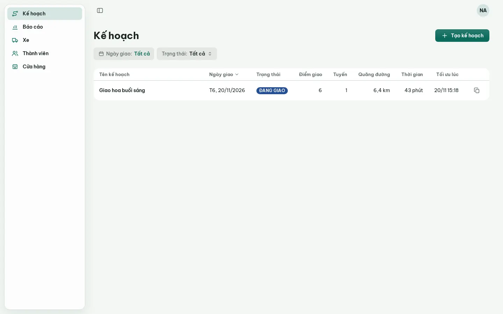
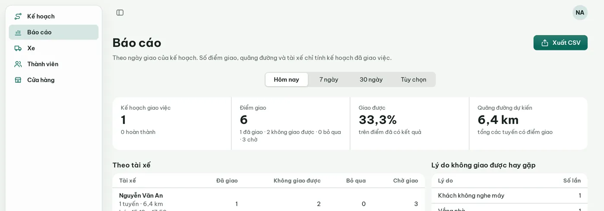
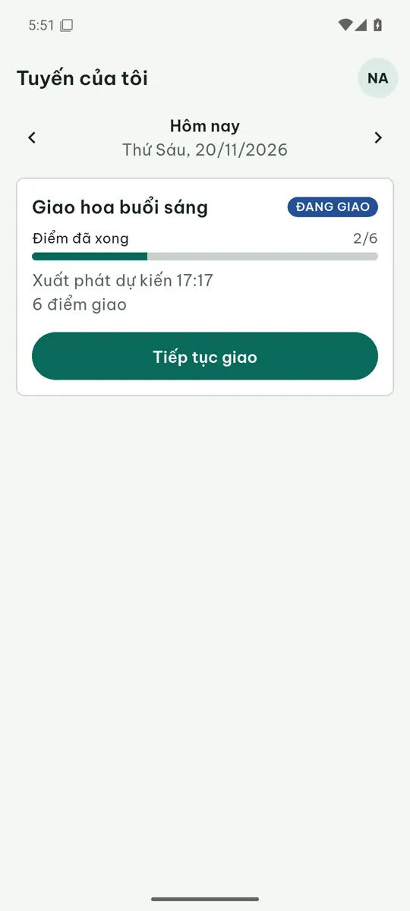

Phần mềm quản lý giao hàng và tối ưu tuyến đường cho đội xe
PathWise giúp cửa hàng và doanh nghiệp nhỏ quản lý giao hàng, phân chia đơn cho nhiều tài xế và theo dõi tiến độ trên cùng một nền tảng. Tự động sắp xếp lộ trình theo mạng lưới đường thực tế, tính đến khung giờ giao hàng và khả năng của từng xe.
Từ khâu lập kế hoạch đến khi hoàn thành đơn hàng, bạn luôn nắm được đội giao hàng đang làm gì và kết quả ra sao.
Kế hoạch thứ Sáu Đã tối ưu
- Sơn Trà · xe tải 1,5 tấn12 điểm · 18,4 km
- Thanh Khê · xe máy9 điểm · 11,2 km
- Ngũ Hành Sơn · xe máy10 điểm · 13,7 km
Được xây dựng cho những tuyến đường địa phương
Từ những con đường nội thành đến các tuyến giao hàng qua sông Hàn, PathWise giúp bạn sắp xếp lộ trình dựa trên mạng lưới đường thực tế tại Đà Nẵng và Hội An.
- 01
Đi đúng đường, đến đúng nơi
Lộ trình được tính theo đường xe đi được thực tế, kể cả những cây cầu nối hai bờ sông Hàn, thay vì đo đường chim bay. - 02
Tìm địa chỉ dễ dàng hơn
Nhập địa chỉ để xác định vị trí giao hàng trên bản đồ. Nếu không tìm thấy địa chỉ chính xác, bạn có thể kiểm tra lại hoặc tự đặt ghim tại vị trí mong muốn. - 03
Đồng bộ với giờ làm việc địa phương
Lịch nhận hàng, ca làm việc và báo cáo đều sử dụng múi giờ Việt Nam (UTC+7), giúp cửa hàng và tài xế theo dõi công việc thống nhất.
- Hải Châu
- Thanh Khê
- Sơn Trà
- Ngũ Hành Sơn
- Liên Chiểu
- Cẩm Lệ
- Hòa Vang
- Hội An
PathWise hiện đang tập trung hỗ trợ các tuyến giao hàng trong những khu vực trên. Chúng tôi sẽ tiếp tục mở rộng phạm vi phục vụ trong thời gian tới.
Từ danh sách đơn hàng đến lộ trình giao hàng
PathWise giúp bạn quản lý toàn bộ quy trình giao hàng, từ nhập địa chỉ, sắp xếp tuyến cho đến theo dõi kết quả của từng tài xế.
- 01
Nhập đơn hàng
Nhập từng địa chỉ hoặc tải lên danh sách đơn hàng từ Excel, CSV theo mẫu. PathWise tự động xác định vị trí giao hàng và thông báo những địa chỉ cần kiểm tra lại.
Excel · CSV - 02
Sắp xếp tuyến giao hàng
PathWise phân bổ các điểm giao cho từng xe và tìm thứ tự di chuyển phù hợp. Bạn có thể xem trước thời gian đến dự kiến, quãng đường của mỗi tuyến và những điểm chưa thể phân bổ.
Tối ưu tuyến - 03
Kiểm tra và giao tuyến
Chủ động điều chỉnh lộ trình bằng cách chuyển điểm giao giữa các tuyến hoặc thay đổi thứ tự giao hàng. Khi đã sẵn sàng, hãy công bố tuyến để tài xế nhận công việc của mình.
Công bố tuyến - 04
Theo dõi giao hàng
Theo dõi vị trí tài xế và tiến độ từng điểm giao. Bạn có thể biết đơn nào đã hoàn thành, đơn nào không giao được kèm lý do và những điểm bị bỏ qua.
Kết quả từng điểm
Không chỉ tìm đường ngắn nhất, mà còn phải phù hợp với thực tế giao hàng
PathWise tối ưu lộ trình dựa trên các ràng buộc về đơn hàng, phương tiện và thời gian làm việc. Nhờ đó, việc phân chia đơn không chỉ dựa vào khoảng cách mà còn phù hợp với khả năng vận hành của từng đội xe.
Khung giờ giao hàng
Ví dụ: 08:00–10:00Sắp xếp lịch trình để xe đến từng địa chỉ trong khung giờ khách hẹn. Bạn có thể xem thời gian đến dự kiến của mỗi điểm giao.
Sức chứa phương tiện
Kg · Thùng · Kiện · ĐơnThiết lập sức chứa riêng cho từng xe. PathWise tự động phân bổ hàng hóa để không vượt ngưỡng giới hạn của từng xe.
Ca làm việc của tài xế
Ví dụ: 07:30–17:00Sắp xếp công việc trong thời gian làm việc của tài xế, tránh phân công các tuyến có lịch trình chồng lấn.
Giới hạn quãng đường
Tùy chỉnh theo từng xeĐặt giới hạn quãng đường cho mỗi phương tiện, giúp kiểm soát độ dài tuyến và tránh giao cho xe nhỏ những hành trình quá dài.
Thử điều phối một chuyến giao hàng
Khám phá cách PathWise giúp bạn quản lý một ngày giao hàng. Trải nghiệm lần lượt các bước tạo kế hoạch, tối ưu tuyến đường, phân công cho tài xế và thêm thành viên vào đội ngũ.
- Tạo kế hoạchNgày giao, tài xế, xe và các điểm giao.
- Tối ưu tuyếnChia điểm cho từng xe, kèm giờ tới dự kiến.
- Giao việcTài xế thấy tuyến ngay trong app.
- Mời tài xếGửi lời mời qua email.

Ảnh chụp màn web điều phối với dữ liệu thử. Bản đồ © MapTiler © OpenStreetMap contributors.
Hiểu rõ hiệu quả của từng chuyến giao
Theo dõi tiến độ giao hàng, kết quả làm việc của từng tài xế và những đơn giao chưa thành công. Mọi thông tin được tổng hợp theo ngày, giúp bạn dễ dàng đánh giá và kiểm soát hoạt động giao hàng.

Thử một ngày giao hàng với PathWise
Đây là giao diện thực tế của ứng dụng tài xế. Hãy thử mở tuyến, cập nhật kết quả tại một điểm giao và tiếp tục hành trình đến địa chỉ tiếp theo.

- Mở tuyến hôm nayTiến độ, giờ xuất phát, số điểm giao.
- Xem điểm tiếp theoĐịa chỉ, giờ dự kiến, gọi khách một chạm.
- Báo kết quảĐã giao, bỏ qua, hoặc không giao được kèm lý do (chạm lý do có sẵn hoặc tự ghi).
- Sang điểm kếĐiều phối viên thấy kết quả ngay; chỉ đường tới điểm sau.
Ảnh chụp app tài xế với dữ liệu thử. Bấm vào nút trên màn hình điện thoại như khi dùng app.
Kết nối người điều phối và tài xế trên cùng một nền tảng
Chủ cửa hàng và điều phối viên quản lý đơn hàng, sắp xếp tuyến giao trên web. Tài xế nhận công việc và cập nhật tình trạng giao hàng ngay trên ứng dụng di động.
Chủ động quản lý hoạt động giao hàng trên web
- Quản lý thành viên qua emailMời điều phối viên và tài xế tham gia cửa hàng. Chủ cửa hàng cũng có thể trực tiếp nhận và thực hiện tuyến giao hàng.
- Tái sử dụng kế hoạch giao hàngSao chép kế hoạch sang ngày khác, từ toàn bộ danh sách điểm giao đến riêng những đơn chưa hoàn thành.
- Theo dõi kết quả và xuất báo cáoXem thống kê giao hàng theo ngày, từng tài xế và lý do giao không thành công. Xuất dữ liệu CSV để đối soát, với phạm vi báo cáo tối đa 31 ngày.
- Không gian làm việc riêng cho từng cửa hàngKế hoạch giao hàng, phương tiện và thành viên được quản lý độc lập. Mỗi cửa hàng chỉ truy cập được dữ liệu thuộc phạm vi của mình.
Nhận tuyến và cập nhật kết quả ngay trên smartphone
- Theo tuyến giao hàng từng chặngXem danh sách điểm giao theo thứ tự được phân công, dẫn đường ngay trong ứng dụng hoặc mở Google Maps chỉ với một lần chạm.
- Cập nhật kết quả tại mỗi điểm giaoĐánh dấu đã giao, không giao được kèm lý do hoặc bỏ qua. Kết quả được cập nhật để người điều phối theo dõi.
Câu hỏi thường gặp
Những điều chủ cửa hàng cần biết trước khi bắt đầu sử dụng PathWise.
PathWise dành cho ai?
PathWise dành cho các cửa hàng và doanh nghiệp tại Đà Nẵng có đội ngũ tài xế riêng, thường xuyên cần phân chia đơn hàng và sắp xếp tuyến giao cho nhiều xe mỗi ngày.
Phù hợp với tiệm bánh, cửa hàng hoa, đồ uống, thực phẩm, vật liệu và các mô hình kinh doanh tự tổ chức giao hàng.
PathWise có miễn phí không?
Có. Hiện tại, bạn có thể đăng ký và sử dụng PathWise miễn phí. Chúng tôi đang trong giai đoạn hoàn thiện sản phẩm và rất mong nhận được trải nghiệm cũng như phản hồi từ những cửa hàng đầu tiên.
PathWise hiện hỗ trợ khu vực nào?
PathWise hiện hỗ trợ hoạt động giao hàng tại Đà Nẵng và Hội An. Địa chỉ kho và các điểm giao cần nằm trong phạm vi này để hệ thống có thể xác định vị trí và tối ưu lộ trình.
Các địa chỉ ngoài khu vực hỗ trợ hiện chưa thể đưa vào kế hoạch tối ưu tuyến.
Tài xế cần điện thoại gì để sử dụng PathWise?
Hiện tại, ứng dụng PathWise hỗ trợ điện thoại Android. Tài xế chỉ cần đăng nhập bằng tài khoản được chủ cửa hàng mời qua email là có thể nhận tuyến và cập nhật kết quả giao hàng.
Ứng dụng dành cho iOS đang được lên kế hoạch phát triển và sẽ ra mắt trong thời gian tới.
Tôi có cần cài đặt phần mềm trên máy tính không?
Không cần cài đặt. Chủ cửa hàng và điều phối viên có thể sử dụng PathWise trực tiếp trên trình duyệt web, chỉ cần có kết nối Internet.
Tôi có thể nhập nhiều đơn hàng cùng lúc không?
Có. Bạn có thể tải danh sách điểm giao từ file Excel hoặc CSV theo mẫu có sẵn. PathWise sẽ kiểm tra dữ liệu và chỉ ra những dòng cần chỉnh sửa trước khi đưa vào kế hoạch.
Nếu tài xế mất kết nối Internet thì sao?
Khi mất kết nối, ứng dụng tạm giữ vị trí và gửi lên khi có mạng trở lại, bản đồ điều phối cập nhật vị trí mới nhất của tài xế.
Kết quả giao hàng chưa gửi được sẽ hiện nút “Gửi lại” để tài xế gửi khi có mạng.
Sẵn sàng cho kế hoạch giao hàng ngày mai?
Đăng ký cửa hàng bằng email, mời tài xế và tạo kế hoạch giao hàng đầu tiên tại Đà Nẵng.